Lab Vue 01 - DonationVue-1.0 (Vue Client App)
This lab involves building your 1st Vue Web App - DonationVue-1.0.
To begin with, it won't actually do much, but it will give you an introduction to some of the basics of what constitutes a Vue Web App, and set up the navigation we need for all the pages in our existing Donation Web App Server.
You can have a look at the this version of the app in action on the YouTube Channel here
Step 1 - Objectives
In this Lab, you will be required to build the first version of our (Client) Vue Web App, called DonationVue-1.0. We will use WebStorm to initially build the most basic starter Vue app and then 'customise' the app to suit our requirements. In this version we will just set up the 'links' we need in our app and introduce some simple components and routes.
On completion of this lab you'll be able to
- design an initial layout for the app
- add some basic components to manage your pages (your templates)
- implement basic navigation using the Router component
- be able to use 2-way Data Binding
Step 2 - Setup
First thing you should do ( if you haven't done so already) is install the Vue CLI so run
npm install -g vue-cliNext, you'll need the Git application/executable (depending on Mac/Windows)
so you can get the respective installers
here Git for Mac
and
here Git for Windows
Next, launch WebStorm and create a basic Vue.js application and name it appropriately, as below
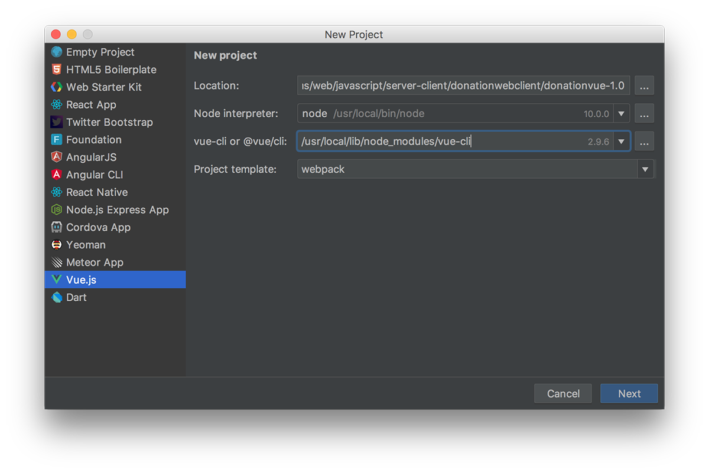
NOTE : Make sure you choose 'webpack' as the project template, if not already selected and if you don't see a path to the vue-cli then you don't have it installed so visit Vue Installation to install.
You can accept all the defaults, with the exception of the 'test runner' option, so choose Karma and Mocha.
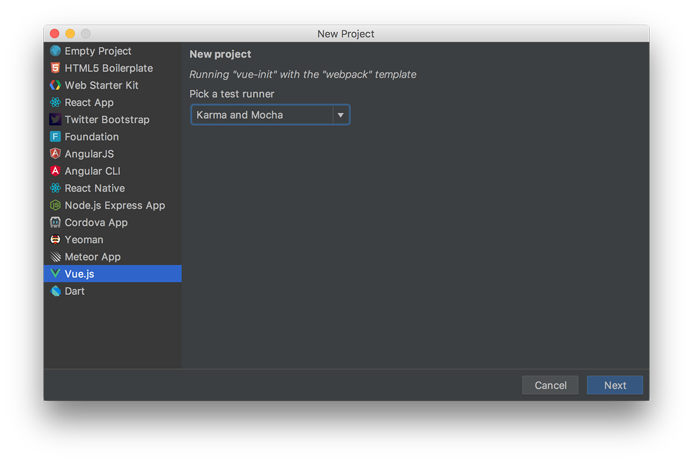
Also, if you chose to install ESLint to lint your code, you better take care how you write your javascript :)
Your project will look like this - there's a lot going on here, but we'll run through the important stuff as we progress through the lab :)
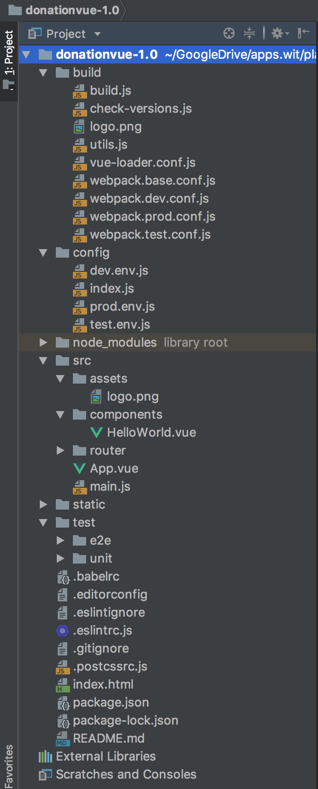
To run the app we need to use npm
npm run startin the current directory but WebStorm can do this for us, so choose the npm tab and double-click 'start'
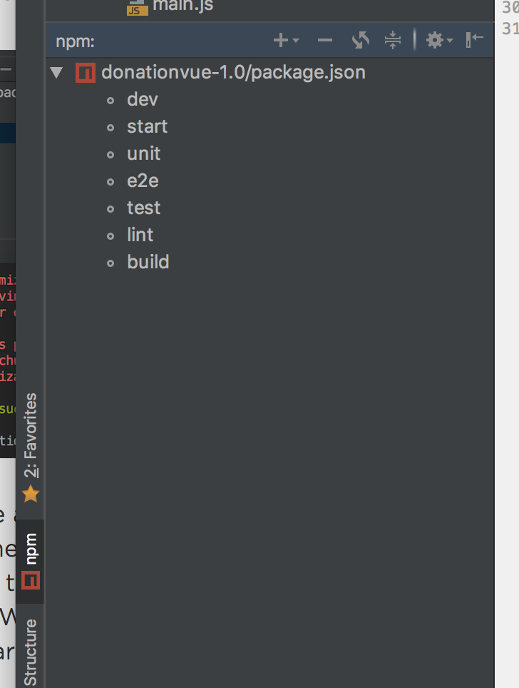
You'll get something along these lines
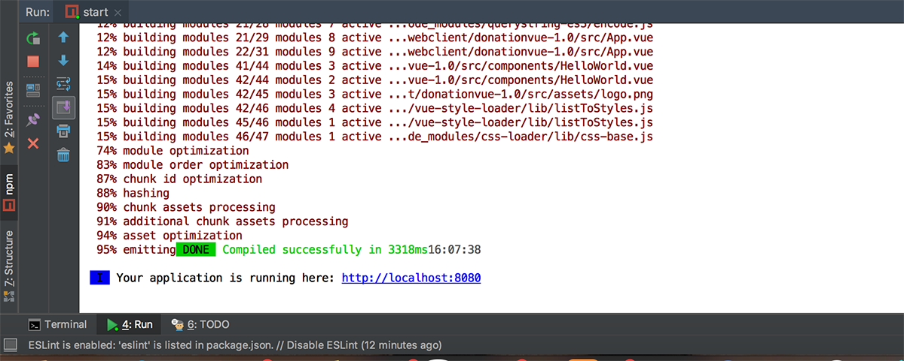
and if you then visit
http://localhost:8080you should see your first Vue Web App, like so
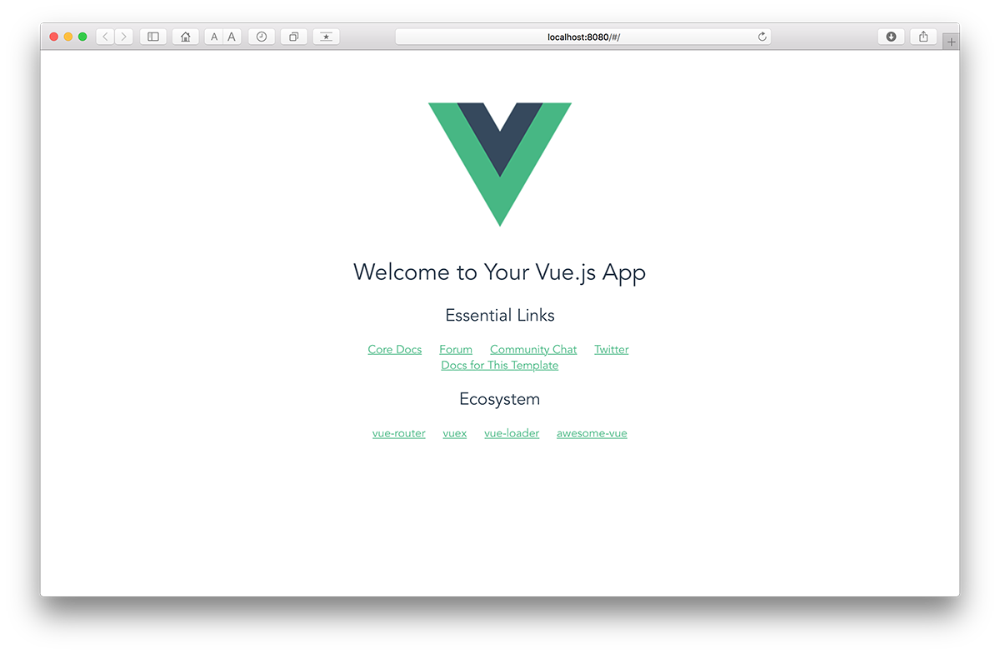
Well Done!!
NOTE : IF YOU GET AN ERROR ALONG THE LINES OF
BrowserslistError: Unknown browser query `dead`THEN YOU NEED TO FOLLOW THESE STEPS
- Open 'package.json' of '\node_module\bootstrap'
- Find 'browserlist'
- In the List Array, you will notice "not dead" - DELETE THIS
- Done :)
The next few steps involve 'customising' this app to look like this
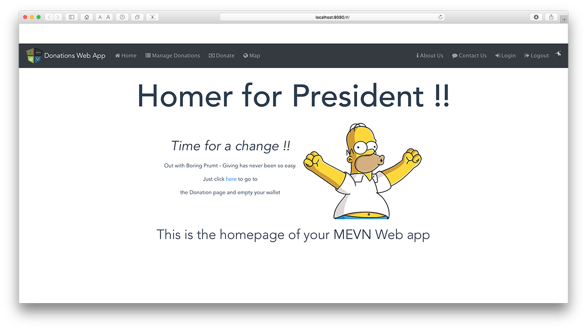
Step 3 - Adding Some Basic Navigation
We're going to use a Navigation bar to allow a user to navigate our app and use certain features. We'll begin by adding a 'Manage Donations' & 'Donate' option - they won't actually do anything except display a message, but it'll be a nice simple start.
Before we can add our navbar there's a few dependencies and assets we need to add (there'll be quite a lot by the time we're finished!!)
The first one (and important one) is
bootstrap-vueso go ahead and add that now via the npm option in Webstorm.
WebStorm->Preferences->Languages & Frameworks->NodeJS & NPM
Now, open your 'main.js' and import the following
import BootstrapVue from 'bootstrap-vue'
import 'bootstrap/dist/css/bootstrap.css'
import 'bootstrap-vue/dist/bootstrap-vue.css'and finally add
Vue.use(BootstrapVue)Now open your 'index.html' and add this link to end of your 'HEAD' tag (as we'll be using Font Awesome Icons)
<link rel="stylesheet"
href="https://netdna.bootstrapcdn.com/font-awesome/4.1.0/css/font-awesome.css" />Finally, download some assets here and copy into you own assets directory assets
Build your app again, to make sure there's no errors and then move on to adding a navbar.
First thing to do is replace the current template html in 'App.vue' with this
<b-navbar toggleable="md" variant="dark" type="dark">
<b-navbar-toggle target="nav_collapse"></b-navbar-toggle>
<img src="./assets/mevnnav.png" class="img-circle" style="padding: 5px">
<b-navbar-brand to="/">Donations Web App</b-navbar-brand>
<b-collapse is-nav id="nav_collapse">
<b-navbar-nav>
<b-nav-item to="/#"><i class="fa fa-home" style="padding: 5px"> Home</i></b-nav-item>
<b-nav-item to="/donations"><i class="fa fa-list" style="padding: 5px"> Manage Donations</i></b-nav-item>
</b-navbar-nav>
<b-navbar-nav class="ml-auto">
<b-nav-item to="/login"><i class="fa fa-sign-in" style="padding: 5px"> Login </i></b-nav-item>
<b-nav-item to="/logout"><i class="fa fa-sign-out" style="padding: 5px"> Logout </i></b-nav-item>
<i class="fa fa-pied-piper-alt fa-1x" style="padding: 5px; color: white;"></i>
</b-navbar-nav>
</b-collapse>
</b-navbar>NOTE : make sure it's between the
<div>tag and before the
<router-view>tag
Next rename the 'HelloWorld' component to 'Home' and replace all it's code with the following
<template>
<div class="hero">
<h1 class="vue-title">Homer for President !!</h1>
<table align="center">
<tr>
<td>
<p class="lead"><b><i>Time for a change !!</i></b>
<p>Out with Boring Prumt - Giving has never been so easy.</p>
<p>Just click <a href ="/donate">here</a> to go to</p>
<p>the Donation page and empty your wallet</p>
</td>
<td>
<img src="../assets/homer.gif" alt="description here" />
</td>
</tr>
</table>
<p></p>
<p class="lead">This is the homepage of your <b>MEVN</b> Web app</p>
</div>
</template>
<style>
.hero {
height: 100vh;
margin-top: 30px;
align-items: center;
justify-content: center;
text-align: center;
}
.hero .lead {
font-weight: 200;
font-size: 2.5rem;
}
#app1 {
width: 60%;
margin: 0 auto;
}
.vue-title {
font-size: 70pt;
margin-bottom: 10px;
}
</style>There'll be a few errors, so see if you can fix them.
Once you have, and you run the app again, you'll get something like This

Now, let's add some functionality and allow the user to navigate to the 'Manage Donations' page.
Step 4 - Implement the 'Manage Donations' Page
At this point we have a simple navigation bar but none of the links work - in this step we'll add in a Vue Component that allows the user to 'manage' the donations as well as visiting the 'Home' page.
Firstly, open up 'App.vue' and confirm the 'link' to 'manage' donations.
Next, open 'router/index.js' and confirm that the 'Home' route is present
{
path: '/',
name: 'Home',
component: Home
}We need to add a similar route for our '/donations' path so the first thing to do is go ahead and add a new Donations component
New->Vue Component and make sure you store it in the components directory
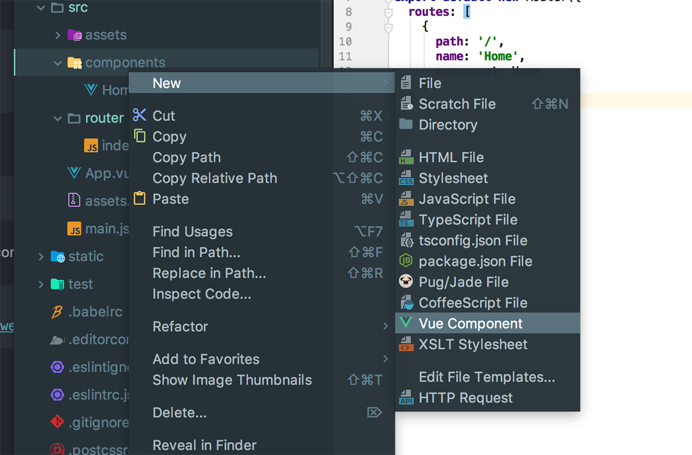
You'll initially have this
<template>
</template>
<script>
export default {
name: "Donations"
}
</script>
<style scoped>
</style>so add the following to the template tag
<div class="hero">
<h3 class="vue-title"><i class="fa fa-list" style="padding: 3px"></i>{{messagetitle}}</h3>
</div>replace the export statement with the following
export default {
name: 'Donations',
data () {
return {
messagetitle: ' Donations List '
}
}
}and add the following to the style tag
.vue-title {
margin-top: 30px;
text-align: center;
font-size: 45pt;
margin-bottom: 10px;
}Here's the full Donations component for reference
<template>
<div class="hero">
<h3 class="vue-title"><i class="fa fa-list" style="padding: 3px"></i>{{messagetitle}}</h3>
</div>
</template>
<script>
export default {
name: 'Donations',
data () {
return {
messagetitle: ' Donations List '
}
}
}
</script>
<style scoped>
.vue-title {
margin-top: 30px;
text-align: center;
font-size: 45pt;
margin-bottom: 10px;
}
</style>Now, we need to 'wire it up' so open your 'router/index.js' again and add the following route object
{
path: '/donations',
name: 'Donations',
component: Donations
}If you try and run your app you'll probably get the following error
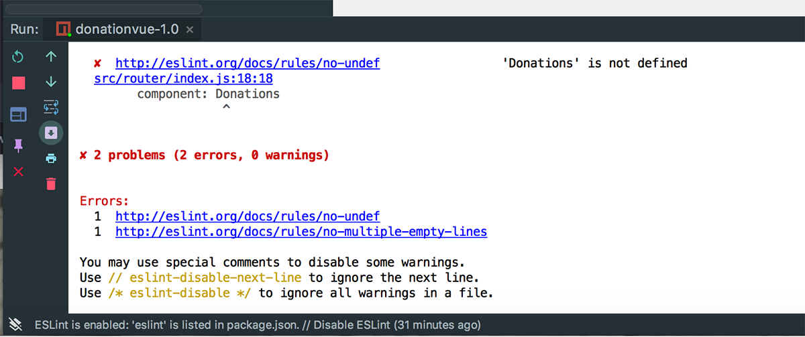
so add the following import to fix the issue
import Donations from '@/components/Donations'Run you app again and you should get the following when your navigate to 'Manage Donations'
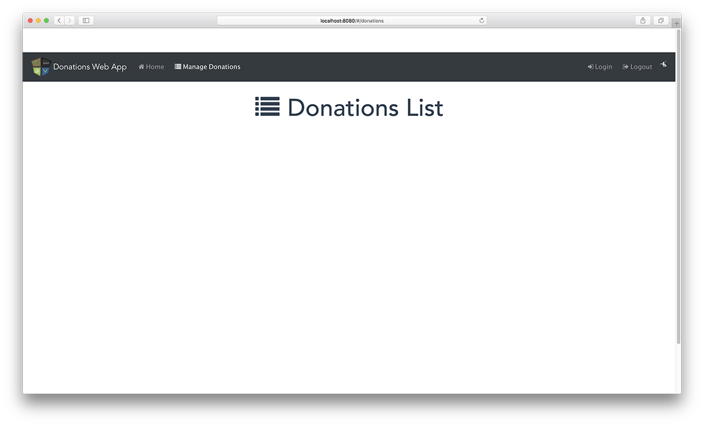
It's not much at the moment, but we now have navigation features in our app.
The next step is to add in the rest of the navigation options
Step 5 - Implementing the 'Donate', 'About Us' & 'Contact Us' Pages
This step involves adding more navigation links to our nav bar to take the user to the other pages available, like so
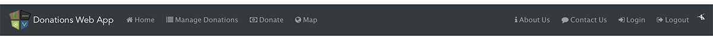
Updating the Navigation Bar
Just to get you started, replace the current navbar in your 'App.vue' with this one
<b-navbar toggleable="md" variant="dark" type="dark">
<b-navbar-toggle target="nav_collapse"></b-navbar-toggle>
<img src="./assets/mevnnav.png" class="img-circle" style="padding: 5px">
<b-navbar-brand to="/">Donations Web App</b-navbar-brand>
<b-collapse is-nav id="nav_collapse">
<b-navbar-nav>
<b-nav-item to="/#"><i class="fa fa-home" style="padding: 5px"> Home</i></b-nav-item>
<b-nav-item to="/donations"><i class="fa fa-list" style="padding: 5px"> Manage Donations</i></b-nav-item>
<b-nav-item to="/donate"><i class="fa fa-money" style="padding: 5px"> Donate</i></b-nav-item>
<b-nav-item to="/map"><i class="fa fa-globe" style="padding: 5px"> Map</i></b-nav-item>
</b-navbar-nav>
<b-navbar-nav class="ml-auto">
<b-nav-item to="/about"><i class="fa fa-info" style="padding: 5px"> About Us</i></b-nav-item>
<b-nav-item to="/contact"><i class="fa fa-comment" style="padding: 5px"> Contact Us</i></b-nav-item>
<b-nav-item to="/login"><i class="fa fa-sign-in" style="padding: 5px"> Login </i></b-nav-item>
<b-nav-item to="/logout"><i class="fa fa-sign-out" style="padding: 5px"> Logout </i></b-nav-item>
<i class="fa fa-pied-piper-alt fa-1x" style="padding: 5px; color: white;"></i>
</b-navbar-nav>
</b-collapse>
</b-navbar>For the purposes of the Case Study we'll only be implementing
- /donations (already done)
- /donate
- /about
- /contact
and it's really only the first two will contain any logic, but it'll be a good exercise to implement them all.
The process is the same as was done for /donations so have a go at the other 3. You'll need to
- Create a separate component for each
- Decide inside each components template how it will render
- style it appropriately
- Add the necessary script ing for (this time) displaying the Title (our 2-way reactive data binding)
Away you go!!
Once you're done, you should have something like these
Solution - Lab Vue 01
You can find the solution to this lab here.